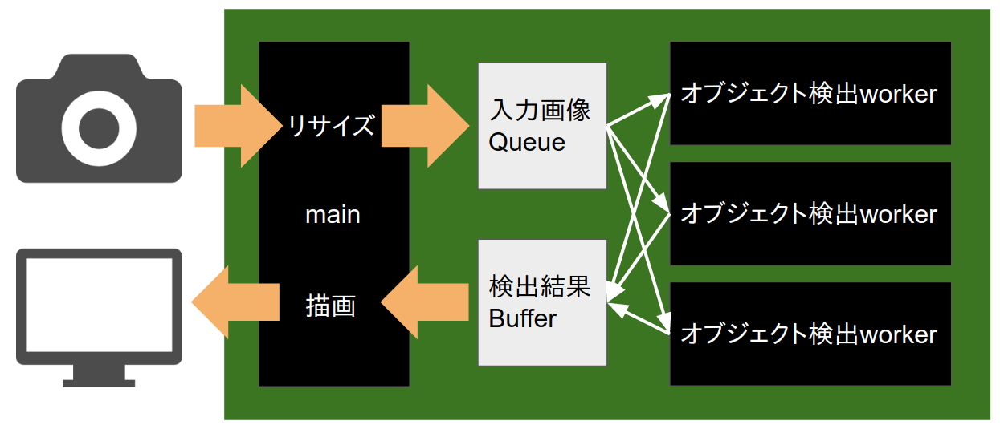
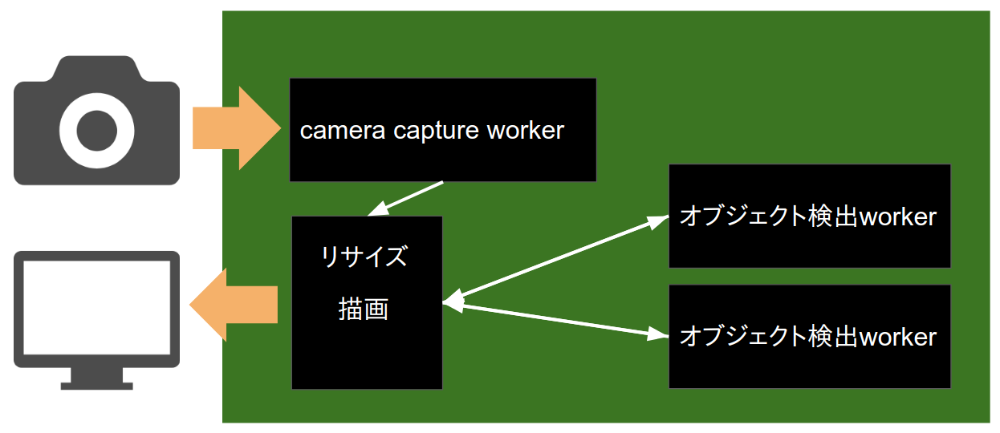

Raspberry Piで
準リアルタイム
オブジェクト検出
ざっくり言うと
YOLOを参考に、ラズパイのCPUでも準リアルタイムでObject Detectionを行えるCNN物体検出器を作った
デモ
- ノートPCで著作権フリーの動画を再生
- PCの画面をUSB Webカメラで撮影
- ラズパイで物体検出
- ラズパイに繋いだディスプレイに結果描画
3物体検出(高FPS版): 4.4FPS
赤=乗り物,
緑=動物,
青=人
3物体検出(低遅延版): 3.5FPS
赤=乗り物,
緑=動物,
青=人
どうやって作ったのか説明
の前に
ラズパイの性能紹介
Raspberry Pi 3 Model B
- 名刺サイズのシングルボードコンピュータ
- Linuxが動く
- CPU ARMv8 4Core
- Memory 1GB
- Disk 16GB(microSD)
このCPU性能でリアルタイム処理をするためには
1. 外部APIを叩く!!
2. モデル軽量化!!
モデル選択
YOLOをベースに作ることにした
- RCNN系
- SSD
- ノード数を減らしたら成立しなくなりそう
- 複雑で実装できる自信がなかった
- YOLO
- パラメータを削っても成立しそう
- 実装できそうと思った(v1なら)
今回作ったやつのCNN部
- MobileNetベース
- 元のフィルタ数は全て32の倍数
=> 全中間層のフィルタ数をn/32に変更して軽量化
- chainerで実装
| n | モデルサイズ |
|---|
| 32(MobileNet Original) | 7.2MB |
| 3(顔検出) | 132KB |
| 6(3物体検出) | 366KB |
学習データ
- Pascal VOC 2007全データ + 2012学習データ
- 顔検出: "head"を含む画像全てと、
含まない画像からランダムに選んだ2%を使用
- 3物体検出: 全画像を使い、オブジェクトをグループ化
例: catもdogもhorseも全て"animal"として1ラベルに
- データ拡張: 左右反転、ランダムクロップ
GPUの活用
- これだけ軽いモデルでも、GPUのほうが学習が速い
- モデルが軽いため、GPUがコアもメモリもダダ余り
- バッチサイズをガンガン上げる! => 精度が落ちた...
- パラメータを少しずつ変えた学習ジョブを並列で実行し、最善パターンを採用
デモのシステム構成(高FPS版)

- worker processで分散処理し、CPUを使い切る
- 検出結果をバッファし、撮影時刻でソートしてから描画する必要があることが遅延の一因になっている
デモのシステム構成(低遅延版)

- カメラ内バッファをbusy loopで捨て続ける
- 検出完了が遅れたフレームは描画せず捨てる
- 遅延は減る(1.54=>0.90)がFPSも落ちる(4.4=>3.5)
今後
-
精度
もうちょっと頑張る
-
Javascriptに移植
-
Keras.jsかTensorFlow.jsに移植して
スマホサイトに組み込み、
ブラウザでリアルタイム処理させたい
- ギガが減る心配なく配れるサイズ
- GPU支援が効くらしい